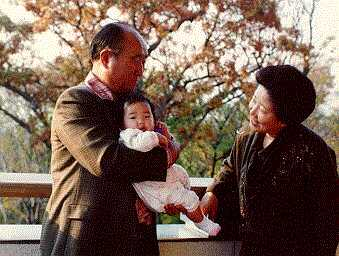

Som en fredsälskande världsmedborgare
Sun Myung Moon

Sun Myung Moon & Hak Ja Han Moon
Som en fredsälskande världsmedborgare (hela boken i PDF)
Kapitel 3: Mannen med fullast mage (DOC)
De övriga separata kapitelfilerna finns inte tillgängliga i arkivet. Läs hela boken i PDF-filen ovan.